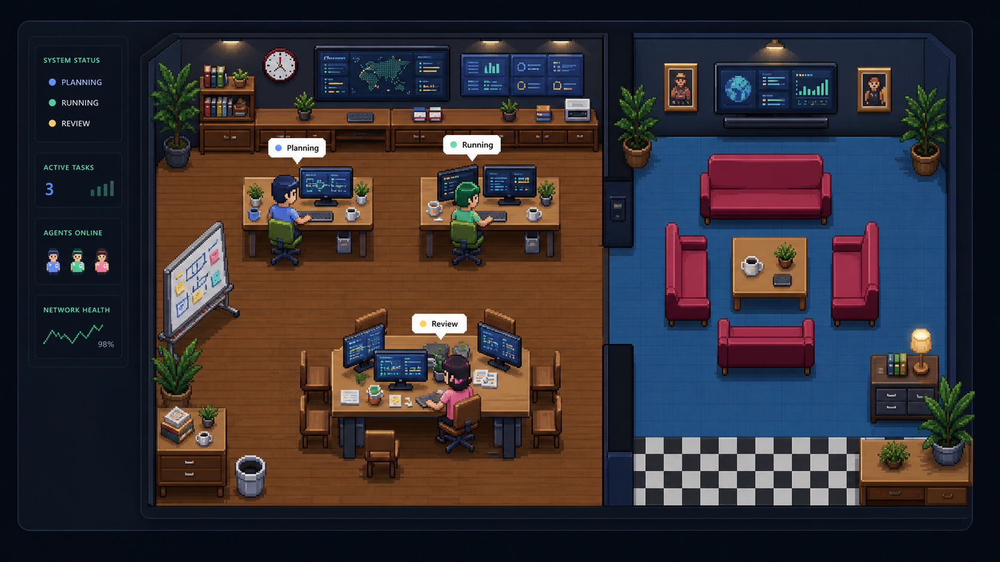

1
Install
curl -fsSL https://raw.githubusercontent.com/lianjiawei/hiclaw-py/master/scripts/install.sh | bash
Linux / macOS / WSL2 自动克隆、创建 venv、安装 CLI，并构建 Dashboard。
Enterprise Intelligence · Multi-Agent Operations
专为企业打造的长期稳定智能体系统，助力安全生产、智能决策与运营优化。 实时提醒、应急分析、长期任务管理，一体化赋能企业数字化与智能化转型，让效率与安全同行。
$ hiclaw setup
选择 Provider、消息通道、Dashboard 监听地址
$ hiclaw start
Dashboard: http://127.0.0.1:8765/core
$ hiclaw status
HiClaw is running · 3 agents ready
Quickstart
curl -fsSL https://raw.githubusercontent.com/lianjiawei/hiclaw-py/master/scripts/install.sh | bash
Linux / macOS / WSL2 自动克隆、创建 venv、安装 CLI，并构建 Dashboard。
hiclaw setup
交互式创建 `.env`，引导配置 Provider、Telegram / Feishu 和 Dashboard。
hiclaw doctor
hiclaw start
hiclaw status
hiclaw logs -f
用于服务器长期运行；本地调试可以使用 `hiclaw run` 或 `hiclaw-tui`。
Core Capabilities
规划、执行、复核与用户自定义 Agent 可按角色协同，支撑复杂任务分工、流程闭环与责任追踪。
覆盖定时提醒、巡检记录、日报生成、风险排查和长期任务运行，降低重复性工作的人力成本。
实时展示智能体状态、授权等待、工具调用与任务进展，让关键流程更透明、可管控、可审计。
从安装、配置到启动前检查形成完整闭环，用更友好的诊断提示降低上线与运维门槛。
支持 Telegram、Feishu、TUI 与后台服务模式，适配企业内部协作、值班响应与本地调试场景。
通过工具授权、工作区限制、日志追踪与状态命令，帮助企业在效率提升的同时保持运行可控。
Operational Visibility
HiClaw 的 Pixel Office Dashboard 将抽象任务转化为直观运行视图， 帮助团队快速识别工作中、等待中、阻塞中、已完成与空闲状态，提升运营响应效率与管理透明度。

Architecture
轻量任务走单智能体路径，保证更低延迟与更直接的响应效率。
复杂任务由 planner、executor、reviewer 按计划拆解协同，支持更稳健的执行与复核闭环。
企业可基于能力目录扩展自定义 Agent，将行业知识、岗位职责与业务流程沉淀为专属角色能力。